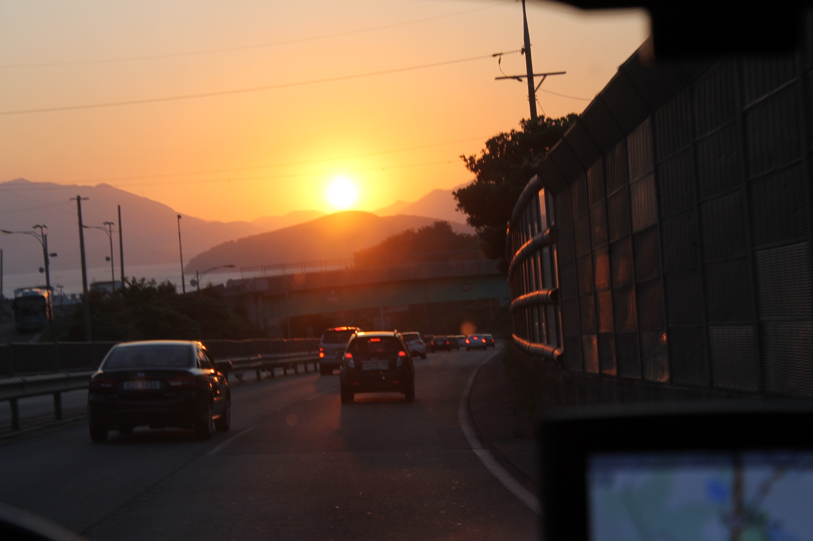

Seoul
The starting grid: check-in, briefing, first photos, and the first moment everyone understands they are part of the same weekend.
Phase One route reveal / August 14-17
Starting from Seoul, Phase One introduces the first cities of Korea Grand Tour 2026. Scroll to follow the route like a live festival line-up: city by city, kilometer by kilometer, with two more phases still to come.
The meeting point: registration, briefing, first photos, and the moment the weekend becomes real.
The starting grid: check-in, briefing, first photos, and the first moment everyone understands they are part of the same weekend.
Track-side energy and mountain roads. This is where the convoy finds its rhythm.
Orchard roads and open countryside make the first long transfer feel like a proper tour.
Coastal air, industrial scale, evening regroup, and rolling shots with the sea nearby.
The road slows into bamboo, food, and the kind of green scenery that changes the mood.
The cultural headliner: food, old streets, night energy, and the shared feeling that the weekend became a memory.
More phases coming
